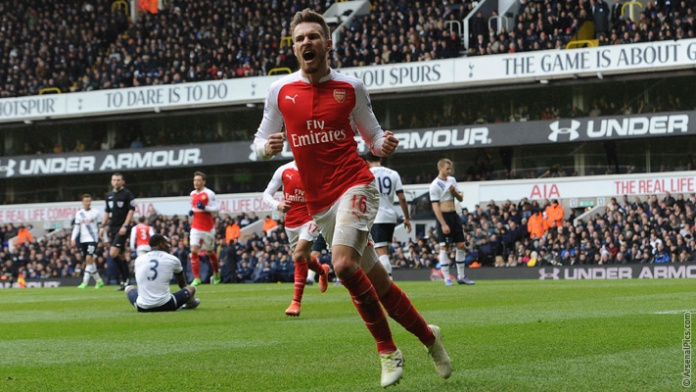
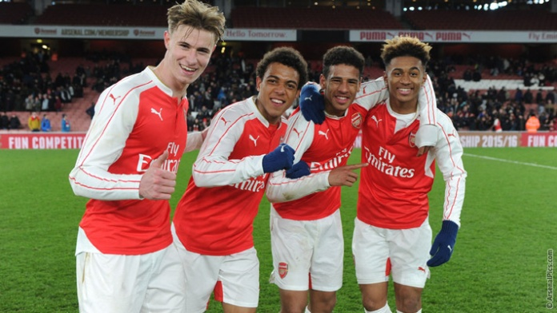

The 10-man Gunners rescued a 2-2 draw in the north London thanks to Alexis Sanchez's late
strike - but their title chances have still been damaged.
A show of character at last from Arsenal, probably too little and too late to save their title chances, but at least it might be enough to prevent the Premier League trophy going to their bitter north London rivals.

Neither side will be happy with a 2-2 draw that was as much 'typical Arsenal' as it was 'Spursy'. Leicester and Manchester City are the beneficiaries from a pulsating north London derby on Saturday that both sides will feel they should have won.
The regret for Arsenal will be the red card shown to Francis Coquelin in the 55th minute, a moment of madness as he slid in on Harry Kane when already booked. The Frenchman had his head in his hands before he even got to his feet to see the red card in the referee's hand.
"We have shown great spirit all game, I'm proud of the spirit the players have shown and the response even with 2-1 down, we went down to 10 men," he told BT Sport. "We managed to come back with at least a point.
"We have big regret, it looked like we were completely in control. Then we went down to 10 men. That's the regret of the day. Overall, it's difficult to take.
"Personally, I never questioned the character of this team, when you don't win the games and you lose you have to accept that.
"You have to respond on the pitch, that's all you can do, and I think we did that today in a very convincing way."
Arsenal U18 2 - 1 Liverpool U18. Match Report.
Arsenal Under-18s set up a FA Youth Cup semi-final clash against Manchester City with an impressive 2-1 win over Liverpool on Friday.

The Gunners were good value for their victory and were unlucky not to take the lead before the break, with Ismael Bennacer rattling the crossbar from a whipped free-kick.
However, Steve Gatting's side took the lead immediately after the restart when Stephy Mavididi prodded home from close range, but were pegged back three minutes later by Conor Masterson.
Arsenal refused to sit back though, and Hinds secured victory just before the hour mark to send the Gunners into the last four of the competition.
Team news: Cech, Koscielny, Wilshere.
Arsene Wenger has revealed the latest news on his squad ahead of Saturday's north London derby away at Tottenham Hotspur.
on team news...
Petr Cech is out and Laurent Koscielny is not back. We have to check this morning that everybody who played on Wednesday is a available tomorrow.
on Cech...
It is a calf injury. He had a little groin problem but he declared himself 100 per cent fit. Then you have to trust the player. He's 33 years old and he knows his body. If he says he's fit then he is available.
Cech - We have confidence in Ospina
on Koscielny...
Koscielny is out. He has a small injury but he is out tomorrow and Tuesday next week. It's a grade one, so it's a very short period. I don't think he'll be available on Tuesday but next Saturday he should be alright.
on if Jack Wilshere is running...
Not yet. He is going to plan. He is doing well but we think three to four weeks. Maybe he will be available [after the international break].
on Jack's chances for Euro 2016...
He is an important player in the plans of Roy Hodgson. We know that because I spoke with Roy about Jack. We need to do everything to make him available for us.
Arsenal 1 - 2 Swansea. Match Report.
Arsenal's Premier League frustration continued as Swansea City came from behind to win at Emirates Stadium.
The home side were dominant in the first half and took a deserved lead when Joel Campbell finished brilliantly from Alexis' pass.
But Swansea equalised against the run of play, Wayne Routledge racing through to beat Petr Cech.
Olivier Giroud crashed a shot off the crossbar and Alexis was twice denied by the woodwork as Arsenal pursued the victory their performance probably warranted.
Instead, they were left without a point as Ashley Williams converted Gylfi Sigurdsson's free-kick from close range.
On a night of frustration, news filtered through that Tottenham and Manchester City had both lost. But Arsenal could not capitalise. The pendulum has swung back in Leicester's favour in this unpredictable title race.
The Gunners are by no means out of contention but their next fixture may be a decisive one - at White Hart Lane on Saturday.
Team news: Updates on the Ox and Welbeck.
Arsene Wenger has revealed the latest team news ahead of Wednesday night's home Premier League match against Swansea City.
on team news...
I will have to check today but I don't think we have any problems from Sunday apart from one or two who have muscular tightness. Apart from that, everybody should be available.
on Oxlade-Chamberlain's injury...
[He will be out for] six for eight weeks. No surgery. We feared surgery at some stage before we saw the MRI. In the end we got, on that front, positive news.
on it being a blow...
The next eight weeks means March and April. He should be OK for the Euros.
on selection...
It's possible I will make changes. Some players are still not out of it. I will have to see if I have to be cautious with Danny Welbeck or not. Medically I need advice on that and I will see.
Arsenal U21 1 - 1 Wolverhampton Wanderers U21. Match Report.
Arsenal Under-21s extended their unbeaten run to six games with a 1-1 draw against Wolves on Monday night.
Donyell Malen put the hosts in front when he raced past his marker and planted a strike into the bottom corner.
The visitors hit back immediately and, following a goalmouth scramble, Tommy Rowe poked the ball into the back of the net.
Substitute Stephy Mavididi had a golden opportunity to snatch all three points late on but Jon Flatt palmed away to Krystian Bielik who rattled the crossbar which forced the home side to settle for a point.
Manchester United 3 -2 Arsenal
Arsenal's Premier League title hopes were dented after they were beaten 3-2 by Manchester United at Old Trafford on Sunday.
In a captivating fixture, the Gunners found themselves two goals behind just after the half hour courtesy of Premier League debutant Marcus Rashford, who scored twice in the space of three first-half minutes.
The Gunners pulled one back just before the break through Danny Welbeck but Louis Van Gaal's team restored their two-goal advantage 20 minutes after half-time when Ander Herrera's heavily-deflected 20-yarder wrongfooted Petr Cech.
Mesut Ozil ensured an interesting finale by lashing home after 70 minutes but, try as they might, Arsene Wenger's side could not conjure up an equaliser.
This was a thorough test of Arsenal's title credentials and, with Tottenham Hotspur beating coming from behind to beat Swansea City, may be a game the Gunners look back on with plenty of regret at the end of the season.
'To beat United, it needs to be special'
Arsene Wenger says that Arsenal's performance "needs to be special" if they are to beat Manchester United at Old Trafford.
The Gunners have not won at their rivals in the Premier League since 2006, when Emmanuel Adebayor's 86th-minute strike secured victory.
Arsenal did beat Louis van Gaal's side with three goals within the first 20 minutes of October's reverse fixture, however, and Wenger says the Gunners will have to be at their best again going into Sunday's showdown.
"If you look all the titles of Manchester United, to beat them at Old Trafford it needs to always be special," he said. "They have never won many more games than us away from home in their whole history. There are a lot of ingredients [for success] in there.
"We had a good performance against them in October. I think we took them a little bit by surprise and we played at a high pace from the start and closed down well early on. We need to play at that pace again because our game is based on pace and speed, and if we don't have that I don't see how we can win there.
"We have to raise our level at the right moment. You want to raise your level and after, individually, the players will benefit from that. When we attack well, Alexis will be very dangerous so we have to focus on attacking well together.
"After that it's important to remember that we worked very hard to be in this position. At half time against Leicester, we were eight points behind Leicester. Today we are two points behind. We have to take advantage of that."
For more articles go to News
Follow us on social media.
 This is my own Arsenal Football Club Site!!!
This is my own Arsenal Football Club Site!!!
 Hull City - Arsenal
Hull City - Arsenal  Tottenham 2 - 2 Arsenal
Tottenham 2 - 2 Arsenal